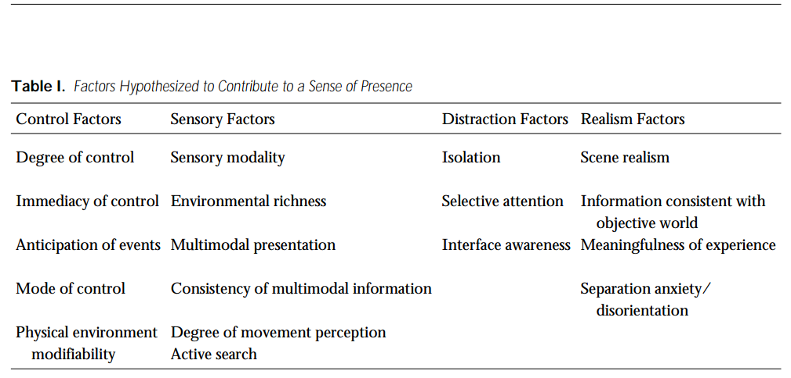

Master's Thesis: Social Media Tools and Sharing of the User-Based Content
You can read the Thesis in its entirety behind this link (JYX, archive for Jyväskylä University): Sosiaalisen median työkalut ja käyttäjälähtöisen sisällön jakaminen
Self-presentation in social media platforms

Self-presentation means basically pretty much as it says: it's the mechanism or a function of identity management. Self-presentation is about degree to which we reveal about ourselves to other people. We intent to give a certain picture of ourselves that pertains to the idea of our self-image or ideal self we want other to perceive. Basically that demands a constant effort to maintain a positive image which give benefits us somehow.
Self-presentation as a source of trust
The more users reveal information about themselves the more they contribute to trust formation withing the user community. According to Joinson, Reips, Buchanan and Schofield (2010) this phenomenon operates on the continuum of privacy and trust. The more we trust in the participants of the conversation the less we worry about revealing something about ourselves. On the other hand, lack of trust diminishes the probability of disclosure. Social media services should attend to the fact that providing means to tranfer as much information possible by the means of the technology channels fosters the activity in the platforms. Frequency, richness and synchronicity of the medium are the focal points here (Bernier & Ganley, 2009; Haenlein & Kaplan, 2010). Basically this means that the better medium can facilitate realistic face-to-face conversation the more it enhances the probability of conversation to continue in terms of greater degrees of content sharing. In this sense self-presentation is linked to trust and vital user community.
Self-presentation and social capital
In social media we signal the very essence of will through frequent engagement in discussions or otherwise in less directed manner through content sharing to our following, for instance. Active reputation management is important thing here, for it facilitates the accummulation of not only trust between community members but also helps build social capital which grants us greater benefits at hand when needed.
Social capital equals more or less to networking but more over on the quality of connections withing the network of users you have. First of all, you get what you give. Your following is the audience which you use to build and maintain your identity and reputation. You need some feedback such as likes and comments to figure out how you are doing at it. On the other hand, the more resourceful connections you have the more advantages you may get out of them. For instance, if you want to get your message out there as far as possible on Facebook or Twitter you should target your message to the most connected members of the user collective (if you are not the one yet). Visibility is the key here and if harnessed properly it may give great advantages.
Self-presentation on social media platforms
Active self-presentation and reputation may provide you social capital which can be beneficiary not only to youself but to the social media platforms as well. When we investigate charasteristics of social media categories we can make a division based on self-presentation which is more evident on networking-based (networking services, virtual social worlds) than content-based services.
However, this doesn't mean that content communities such as Youtube and many blogs services can't be an effective medium for self-presenting purposes (like Vlogs) but they rely more on the content itself rather than relationships. How ever self-presentation and identity management are still there as a significant motivator of user engagement.
Significance of social presence and media richness
Social presence and media richness tend to be higher as we more toward virtual worlds which basically mean that as media they possess qualities that connects people qualitively in a more meaningful way. According to Haenlein and Kaplan (2010) Short, Williams and Christie (1976) say communication channels differ in their ability to give audio visual and physical information in interaction. They say social presence is fundamentally based on intimacy (interpersonal vs. mediated) and immediacy (asynchronous vs. Synchronous). Basicly this means that face-to-face communication is richer in terms of information than mediated communication which often lacks important aspects of communication. That is, non-verbal cues like bodily and hand gestures and audio stimuli such as tone of the voice.
In social media social presence is higher in those interactions which simulate interpersonal and synchronous communication most effectively. In this sense, virtual worlds imitate face-to-face conversation more accurately so that they have more effect on the participants of the interaction (Haenlein & Kaplan, 2010). Virtual worlds are culmination not only social presence but media richness as well. According to Haenlein and Kaplan (2010) Daft and Lengel (1986) present the idea that the goal for communication is to reduce insecurity and ambiguity. This means that the richer the medium (ability to pass information in given time) the better it is to reduce ambiguity. In other words, media richness refer to ability of the medium to build trust within user community.
Social Presence in Virtual World

On my last post I focused partly on the social presence in general on social media platforms. Social presence is often described as capability of the medium to transmit information which affect communication on the mediated environment. Some forms of social media falls into category which is considered the paramount of social presence. I’m talking about virtual worlds and virtual game worlds which are often designed around the idea of interacting and networking in open environments while giving affordances to creative explorations and play. However, in this post I want to explore further the concept of social presence.
Social presence in 3D virtual worlds is often coined as a consequence of technologic--psychologic-physiological attributes. The aim of this writing is set to explain closely how technology contributes to emergence of presence often seen as subjective experience which give rise to cognitively and bodily experienced phenomena like emotions. This knowledge helps us to build ever better virtual surroundings with improved experience of ”being-there” with a notion of performing as an active agent in the creatively effective ways. Basic premise has been that the greater the social presence the greater the virtual world is as a tool.
Social presence is a normal phenomenon of consciousness which is based on sensory stimulation, environmental factors and innate proclivity. While call for invovelment by environmental factors and actual involvement are a prerequisite, there’s cognitive factors which contributes to social presence. Cognitive phenomena related to sensory stimulation is attention and focus. Focus means paying attention to environment on a general level while attention refers to selectively focusing on the spesific objects in the environment (Fontaine, 1992). Social presence is experienced through involvement with the environment by this cognitive process. Environmental factors on their part are encouraging involvement while innate attributes influence to becoming involved with the surroundings in individualistic ways.
By becoming involved is the central attribute of immersion which is a prerequisite for prensence, measure of the state of ”being-there” or to what degree the external or the real world is excluded from the conscious experience. (Witmer & Singer, 1998.) According to Slater and Wilbur (1997) immersion presents technological affordance, to what degree technology is able to create multi-stimulant, extensive and inspiring environment. Immersion is pretty much the same as the virtual world itself, yet it describes its quality. Social presence itself is a psychological reaction to immersion. When paired immersion and social presence create an illusion of non-mediated reality, the state of Maya or suspension of disbelief (Slater & Wilbur, 1997; Sheridan, 1998).
According to Lombard and Ditton (1997) illusion can happen in two ways. Medium can ”appear” as invisible or transparent when user shares him/herself with the objects and entities (media contents) of the virtual surrounding. On the other hand, medium can become something else than the medium itself when it becomes an independent social entity. Social aspect rises through transparency and interactivity. Mere objects and entities of the virtual reality become translated as social in their nature which give a facade of meaning to the surroundings. This meaning making process is connected to our subjective experiences where emotions and motivations come into play on the psychological and physical plain of existence.
The role of immersion in relation to presence in virtual reality
Immersion is the ability of the technology to create and maintain an illusion on inclusive and vivid virtual surroundings. Basicly immersion refers to the virtual world itself. On my last post I discussed this topic more closely in relation to social presence which is psychological outcome of the immersion. Typically this is pronounced in the most advanced virtual worlds. (Juan & Perez, 2009; Krijn ym., 2004; Ling, Brinkman, Nefs, Qu & Heynderickx, 2012; Baños ym., 2004.)
According to Juan and Perez (2009) CAVE- (Cave Automatic Virtual Environment) and HMD (Head Mounted Display) systems are the virtual technology in question, former being the most impactful in creation of social presence. According to Slater, Usoh and Steed (1994) criteria pertaining to virtual worlds that contributes to the exprerience of presence are 1) quality and transparency of the technology, 2) consistency of the virtual environment, 3) interactivity, 4) a virtual body, 5) coherency in causality between action and consequence. User must not be interfered by technology he is wearing as it interferes the quality of the experience. Virtual world should enhance the bodily experience by adding not only virtual body, avatar, but a virtual hand as a part of the way user interacts with the objects and other users (Perez-Marcos, Sanchez-Vives, Slater, 2012). To enhance causality and bodily experience high degrees of synchronicity is demanded as well (GonzálezFranco, Pérez-Marcos, Spanlang B, Slater, 2010). Possibility to interact with other users increases the likehood of social presence (Grinberg, Careaga, Mehl & O’Connor, 2014.).
Witmer and Singer (1998) categorize social presence in virtual worlds to four interdependent classes (Table): control, sensory, distraction and realism factors. Each main class and components therein function in cooperation resulting to the experience of presence. Control factors are about the degree user can influence the events or surroundings like manipulating objects in the virtual world (Sheridan, 1992).
Sensory factors presents the affordance in terms of visual and auditive stimuli that creates the coherent virtual world. This includes also ability to see bodily movements. Distracting factors are basically the technology user wears – they should distract one’s attention away from the real world and to the immersion. Realism factors are representing the coherence and continuity of the virtual experience. One should note that this doesn’t refer to photo realism itself as it is more important to maintain laws of physics and causality, for instance. Separation anxiety refers to the nausea user may experience after using virtual world. It is generally held as a sign of social presence.
Interoception and presence
If we go beyond the perspective that presence is a consequence of immersion we end up to investigate physio-psychological side of human experience. Generally speaking attributes such as personality cognitive skills and styles and age plays a role in emergence of feeling of presence (Benyon, Crerar & Wilkinson, 2001). For instance personality trait like extroversion (Wirth ym., 2007), introversion with high neuroticism (Alsina-Jurnet & Gutiérrez Maldonado, 2010) and other attributes such as empathy (Sas, 2004) are connected to certain extend to the feeling of presence. On the other hand, cognitive skills affect task performance which rely on memory function processes (f. ex. attention). Especially allocation of attentional processes may correlate positively to the presence in the virtual surroundings (Riley, Kaber & Draper, 2004; Kober & Neuper, 2012). Cognitive skills may decline with age which may result to lesser experienced presence by the elderly(Schaik, Turnbull, Wersch & Drummond, 2004). Cognitive style is related to dominant sense and how it is perceived to affect to presence. According to Slater, Usoh and Steer (1994) dominant representation system of the participants (sight) correlated positively to presence whereas secondary system (hearing) was negatively associated. Additionally, visually stimulating surroundings bring about emotions.
Diemer, Alpers, Peperkorn, Shiban and Mühlberger (2015) studied fobias and emotions and their relation to the presence in the virtual world. They found out that test subjects who suffered from arachnophobia and claustrophobia were more reactive to perceptual clues (f. ex. a pic of a spider) than non-phobic subjects. Consequentally, emotional response, fear, indicated greater presence. This may also stress the importance of higher cognitive load and contextual information as a source of higher presence. For instance, Ling etc. (2012) say that public speaking in virtual world may cause higher stress levels. Also, according to Gorini etc. (2011) contextualization such as adding narrative-related tasks within the virtual environment help participants feel greater engagement and subsequent presence. They say that narrative may help giving more meaningful experience as entities and objects are seen in a more socially intrepreted manner, especially when it invokes feeling related to fear. As fear and higher cognitive load elicites presence is, in turn, a questionable thing as using technology should be a pleasant experience.
Possible explanation for the connection between emotion and presence is arousal (Diemer, etc. 2015). There’s two aspects pertaining to this view on explaining presence – exteroceptive and interoceptive one. Exteroception is the way we see outern virtual world with all of its stimuli. Interoception refers to the inner world and workings. Reactions to the stimuli creates emotions which cause arousal in the interoception. Cognitive evaluation of the arousal leads to the feeling of presence. According to Freeman, Lessiter, Pugh ja Keogh (2005) when aroused, humans transition to the fight or flight state which by they become exposed to the surrounding stimuli – the virtual world. Interoceptive sensitivy may be the case with persons with phobias - fear and arousal accummulate by the circular effect of one another.